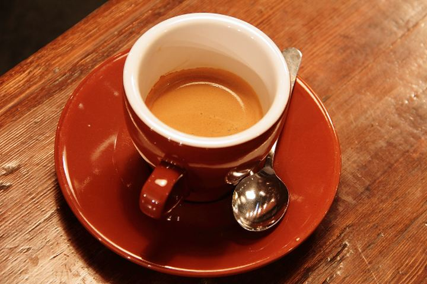

AgenceN-014
Grenoble Centre
- Primes
- 12,4 M
- Effectif
- 18
ActifMaj 14:02
Chaque composant est montré avec son code réel, puis décrit : quand l'employer, quand l'éviter, ses états, son accessibilité.
Titre espacé à gauche, métadonnées à droite, un filet dessous. Un seul par écran.
<header> ; le titre peut être un h1 si l'écran n'en a pas d'autre.Numéro, titre, note facultative à droite. Il ouvre chaque région d'un écran.
h2, h3) ; le numéro est lu avec le titre.Pied d'écran : références, folio, source. C'est le contrepoids discret de l'en-tête.
À n'employer que pour détacher un contenu du flux. data-theme sur un panneau l'inverse : c'est la plus grande masse claire permise sur un écran encre, une seule par vue.
--surface un cran plus clair · --sunken en creux · --dashed provisoire · --flush sans marge intérieure · data-theme inversé.La « carte » du système. Ce n'est pas une boîte : c'est un filet supérieur, un en-tête de service, un titre, un contenu et un pied. Les fiches d'une même grille partagent la même anatomie, dans le même ordre.
Fiches cliquables : la fiche entière est le lien (<a class="c-card">). Le filet répond au survol ; la sélection l'épaissit à 2 px. --boxed encadre les fiches d'un choix, --dashed marque l'emplacement vide.
__head (catégorie à gauche, référence à droite) · __title · __body · __media facultatif · __foot (état à gauche, métadonnée ou flèche à droite). Aucune partie n'est obligatoire, l'ordre l'est..c-table), et toute fiche dans une fiche. Pas de bouton primaire dans une fiche : une action au plus, en pied.--boxed cadre · --surface fond détaché · --dashed emplacement vide · --signal une seule par vue · __title--label titre en capitales.aria-current, aria-selected) : contour de 2 px en gris moyen ; le fond ne change pas. Ni élévation ni déplacement.<article> avec un titre h3/h4 ; cliquable : un seul <a> englobant, sans autre contrôle à l'intérieur.Deux natures d'image. Un dessin du système — trait d'un pixel, tons du système — entre tel quel. Une image brute — photo, capture, visuel fourni — est encrée : ramenée au gris, fondue dans le ton de la page, ses extrêmes rabattus pour ne toucher ni le noir ni le blanc. Elle devient une masse tonale moyenne, comme un aplat.

Dans une fiche, l'image vient après l'en-tête et le titre : toutes les fiches d'une rangée s'ouvrent ainsi par le même filet et le même style de texte. La fiche cliquable annonce son clic par la pointe de flèche au bout du filet.
--raw encrée : le traitement par défaut de toute image brute · --raster encrée et tramée, une ligne sur trois rendue à la page : pour une grande image ou une image sombre · --threshold seuillée en deux tons : petites vignettes, logos, signatures · --square, --wide pour le format (3:2 par défaut).currentColor, traits d'un pixel posés sur la grille, angles vifs, aucun aplat ; tireté pour ce qui est caché ou projeté. Ce n'est pas une icône : il dessine un objet précis, pas une action.alt qui décrit le sujet ; vide si l'image répète le titre. La légende (.c-media__caption) porte la source.Huit images de sources, de sujets et de lumières sans rapport — un portrait en studio, une photo de nuit, un relevé scientifique. Encrées, elles tiennent ensemble : même gamme de tons, même poids, et la grille reste une page. Ici la fiche se réduit à un filet, une ligne de service, l'image et une légende.
--raw ou tout en --raster, jamais mélangés. La légende sous l'image, jamais dessus.Le survol annonce : avant le clic, l'élément dit ce qui va se passer. Jamais par un fond ; par un trait ou par un signe. Un filet qui se termine en pointe de flèche : le clic mène quelque part. Une icône qui glisse en place : le clic fait ce que l'icône dessine. Le texte, lui, ne bouge pas.
i-arrow-right : ouvre, mène au détail · i-external : sort de l'application · i-chevron-down : déplie sur place · i-edit : rend modifiable · i-plus : crée · i-download : télécharge. Un signe, un sens.tr[tabindex]) et fiche cliquable (a.c-card) : la pointe vient seule au bout du filet de survol. Une ligne qu'on ne peut que lire garde un filet nu : la différence est le message..c-cue sur une icône placée en fin d'élément interactif ; .c-cue-host sur un conteneur qui n'est ni lien ni bouton.aria-hidden="true" : l'intitulé dit déjà l'action. L'indice apparaît aussi au focus clavier.Le kanban du système : des colonnes d'état, des fiches que l'on fait glisser de l'une à l'autre. Une colonne n'est pas une boîte : un filet, un nom, un compte entre crochets, puis ses fiches — qui sont des .c-card ordinaires. Ci-dessous, un glissé figé en cours de route : un emplacement en tireté, à la taille de la fiche, montre où elle se posera ; la colonne visée prend le contour de sélection.
L'écran complet, avec glissé-déposé, création et édition par l'inspecteur : exemple Dossiers.
.c-board · __col (filet au-dessus) · __head (nom, compte entre crochets) · __list de .c-card (__title--small) · __add au pied de la colonne..c-card--ghost : fond de la page, contour de sélection, aucune ombre). Un emplacement en tireté, à sa taille exacte (.c-board__drop), montre où elle se posera avant qu'on la lâche ; les autres fiches s'écartent. La colonne visée porte .is-target. Déposer s'annule (toast, touche Z)..c-card--signal et le statut critique. C'est le seul rouge du tableau ; les colonnes n'ont pas de couleur.Un <details> natif. Le filet supérieur porte la ligne, le signe + / − dit l'état. Plusieurs dépliants empilés dans .c-accordion forment un accordéon.
name partagé rend l'accordéon exclusif.Le pied d'un volet : ce qui se passe à gauche, ce que l'on peut faire au clavier à droite. Les touches s'écrivent dans leur petit cadre.
Les onglets vivent sur le plan de travail, au-dessus de la page qu'ils ouvrent. Un onglet est une page qui reste ouverte : en y revenant, on la retrouve telle qu'on l'a laissée. Tous ont le fond de la page ; l'onglet courant ne s'en distingue que par son contour — un trait de 2 px dessus, et aucun trait dessous : il s'ouvre sur la page.
.c-pathnav) : un seul moyen principal par application. Pour les vues d'un même objet à l'intérieur d'une page (.c-tabs). Des icônes ou des numéros à la place des mots.__tab (__label, __close pour un onglet ouvert à la demande) · __tab--tool pour un outil à gauche, comme le plan · __more pour le menu de débordement. Dans un plan de travail .l-desk--tabs, la rangée occupe toute la largeur et toutes les pages commencent sur la même ligne, dessous..l-detail, 64 px, sans filet vertical) : il appartient à l'onglet, part avec lui et revient avec lui. C'est le cas général..c-breadcrumb--head) : famille, page, détail.role="tablist" / tab / tabpanel, aria-selected. Flèches gauche et droite passent d'un onglet à l'autre, Suppr ferme un onglet ouvert à la demande. Le menu de débordement annonce le nombre d'onglets qu'il contient.catalogue/assets/tabs-demo.js.Entre deux pages, c'est la bande de plan de travail elle-même qui se saisit. Un court trait vertical en marque le milieu ; il s'allonge au survol. Aucune poignée ajoutée, aucun bouton.
--inspector.role="separator", aria-orientation="vertical", focalisable ; les flèches gauche et droite déplacent la limite.Label gras, filet conducteur, valeur maigre. La colonne des valeurs forme un axe vertical : l'aligner sur la grille. .c-kv--plain garde la casse d'origine.
<dl> ; chaque paire dans un <div> contenant dt et dd.Liste numérotée automatiquement, titre à gauche, valeur à droite. Sommaire, liste de pistes, classement.
<a class="c-index__row">) : le filet conducteur s'éclaircit au survol.Un filet fin sous chaque ligne, pour suivre la lecture d'une colonne à l'autre, et rien d'autre : pas de trait sous les en-têtes, que leurs micro-capitales distinguent déjà. Le seul filet fort est celui du total, parce qu'il a un sens. En-têtes en micro-capitales, chiffres à droite (.is-num), ligne clé en gras (.is-key). Une seule cellule peut porter le signal (.is-signal).
| Branche | 2025 | 2026 | Dynamique |
|---|---|---|---|
| Non-vie | 3 723 741 | 4 285 447 | 115,1 % |
| Vie | 1 640 244 | 904 503 | 55,1 % |
| Total | 5 363 985 | 5 189 950 | 96,8 % |
<tr tabindex="0" aria-selected>. Sélectionnée, elle prend deux filets de 2 px, dessus et dessous ; le contour reste ouvert sur les côtés pour que le texte garde son axe.tr.is-key ligne commentée · tr.is-muted ligne provisoire · tfoot total.<caption>, <th> d'en-tête et de ligne. Envelopper dans .c-table-wrap pour le défilement horizontal en étroit.Quatre extensions du tableau, qui se combinent. Le tri se lit à l'icône de la colonne triée ; l'en-tête reste en haut quand la liste défile ; les cases cochent plusieurs lignes et font apparaître la barre d'actions groupées ; une ligne se déplie pour montrer son détail.
| Sélection | Détail | |||
|---|---|---|---|---|
| Avignon | Sud | 8,7 | ||
| Responsable J. Reynaud · 12 personnes · ouverte en 2006. | ||||
| Brive | Ouest | 2,2 | ||
| Responsable R. Dumas · 4 personnes · ouverte en 2016. | ||||
| Chambéry | Nord | 7,9 | ||
| Responsable A. Perrin · 11 personnes · ouverte en 2009. | ||||
| Grenoble Centre | Nord | 12,4 | ||
| Responsable M. Delorme · 18 personnes · ouverte en 2011. | ||||
| Limoges | Ouest | 5,4 | ||
| Responsable H. Lacroix · 8 personnes · ouverte en 2010. | ||||
| Nîmes Arènes | Sud | 6,2 | ||
| Responsable N. Blanc · 9 personnes · ouverte en 2012. | ||||
aria-sort sur le th, bouton .c-table__sort. Chevron haut : croissant ; chevron bas : décroissant. Les autres colonnes triables ne montrent leur icône qu'au survol. Une seule colonne triée à la fois ; un clic inverse le sens..c-table--sticky, dans une zone qui défile. À partir d'une quinzaine de lignes. Fond plein, pas de filet..c-table--ruled les impose pour un tableau large, dense ou destiné à l'impression. Le trait de somme reste..c-table__check. Une ligne cochée ne change pas d'aspect : la case suffit. Ce qui se voit, c'est la barre .c-bulkbar et son décompte, qui remplacent la barre d'outils..c-table__expand avec aria-expanded, suivi d'une ligne tr.c-table__detail. Le détail s'aligne sur la colonne de titre : --controls donne le nombre de colonnes de contrôle qui la précèdent.Label, valeur, note. Un seul --hero par écran ; les autres en taille normale ou --compact.
--hero sur un écran, une valeur en signal sans raison énoncée.--hero 48 px, le point focal · défaut 32 px · --compact 24 px · --ruled filet supérieur pour une rangée.Bloc « clé » posé dans un coin libre de la figure. Elle nomme les formes, pas les couleurs.
Le primaire est un bloc inversé : la tache la plus claire de l'écran. Il conclut une tâche — se connecter, enregistrer, confirmer — et il n'y en a qu'un. Un écran où l'on consulte n'en a pas : « Nouvelle agence » ou « Exporter » y sont des boutons à contour, pour laisser le clair au contenu. Le bouton signal est réservé à l'irréversible. L'inactif se reconnaît à son contour tireté, pas à une opacité.
aria-label.--primary zéro ou une fois par vue : seulement quand l'écran existe pour accomplir une action (formulaire, connexion, modale) · défaut (contour) pour le reste · --quiet pour l'action tertiaire ou dans une ligne · --signal pour l'irréversible.<button type> ; 32 px de haut au moins, 40 px en --large sur écran tactile..c-steps) ou pour filtrer une liste (préférer .c-chip).role="tablist" / tab / aria-selected, ou des liens avec aria-current="page".Deux à quatre options exclusives. L'option active se reconnaît à son seul contour, épaissi à 2 px en gris moyen ; son fond ne change pas. On la retrouve si on la cherche, elle ne retient pas l'œil.
role="group" avec aria-label ; chaque option en aria-pressed.Un bouton bascule compact, pour filtrer une liste. Actif : contour de 2 px en gris moyen, fond inchangé. Ce qui doit se voir après le clic, c'est la liste filtrée et son décompte, pas le filtre.
812 agences affichées
.c-segmented) ou pour étiqueter sans interaction (préférer .c-tag).<button aria-pressed> ; le groupe porte un aria-label.Label toujours visible au-dessus, en micro-capitales. L'erreur est dite par un texte et un glyphe ; le signal ne fait que la désigner.
aria-invalid : filet signal à gauche et message), inactif (tireté).<label> englobant ; l'erreur est liée par aria-describedby.Formes pleines, sans coche : carré pour le choix multiple, rond pour le choix unique, curseur carré pour l'état immédiat.
role="switch" sur l'interrupteur.Un champ précédé d'une loupe, suivi de son raccourci. C'est le champ placé en haut de ce catalogue.
--large (40 px) quand elle est l'entrée principale de l'écran.<label> englobant, aria-label sur le champ, nombre de résultats annoncé par une zone aria-live.La valeur se présente comme un texte, pas comme un champ. Une ligne pointillée — celle des formulaires papier — dit qu'on peut écrire dessus ; elle devient pleine pendant la saisie. La valeur ne bouge pas d'un pixel entre la lecture et l'écriture.
idle ligne pointillée · saisie : ligne pleine, ↵ esc à droite · saving valeur grisée, ligne tiretée, indicateur · saved valeur au ton fort et coche, deux secondes · error ligne signal et message.<input>, habillé en texte : focus, lecteurs d'écran et saisie mobile fonctionnent sans script. Le statut est une zone aria-live.data-state de l'un à l'autre revient à l'application ; voir l'exemple « Collection ».L'état se lit à la forme du glyphe et au mot. Il n'existe ni vert ni orange : seul « critique » reçoit le signal.
--critical par vue sans qu'ils désignent le même fait..c-chip). Plus de trois étiquettes sur une même ligne.Un filet fin pour l'étendue, un segment épais pour la valeur.
.v-hbars).role="meter" avec aria-valuenow, min, max et un aria-label.--signal par vue.role="alert" si la note apparaît à la suite d'une action.Deux messages brefs posés au-dessus de la page. L'infobulle précise un élément ; la notification confirme une action et propose au plus une suite.
.c-toasts), la plus récente en bas. Elle disparaît seule après 3 s, 8 s si elle porte une annulation ; --signal attend une réponse. Rien n'est perdu quand elle s'efface : l'événement reste au centre de notifications.role="status" pour une confirmation, role="alert" pour un échec. L'infobulle s'ouvre aussi au focus.Ce qui s'affiche quand il n'y a rien. Ferré à gauche comme le reste, contour tireté — le tireté dit le provisoire. Il nomme ce qui manque et propose une seule issue. Aucune illustration.
Vérifiez l'orthographe ou retirez le filtre « Vie » pour élargir la recherche aux 1 204 agences.
--plain sans contour, à l'intérieur d'un panneau ou d'une fiche. Le bouton est secondaire, sauf si créer le premier objet est l'action principale de l'écran.Trois moyens selon la durée. Sous une seconde : rien. Jusqu'à quelques secondes : les points de suspension ou le filet de progression. Au-delà, ou pour une page entière : le gabarit, qui réserve la place du contenu. Ni cercle tournant ni reflet animé.
.c-loader à côté de l'élément qui se charge · .c-progress sous un en-tête, durée inconnue (.c-meter si elle est connue) · .c-skeleton à la place exacte des lignes à venir.role="status" sur le libellé ; gabarit en aria-hidden. Mouvement réduit : les animations s'arrêtent, le libellé reste.Un caractère qui tourne — | / - \ — et non un cercle. Il dit qu'une valeur précise est en cours d'enregistrement et se place à côté d'elle.
aria-hidden) : le mot à côté, ou un texte masqué, porte l'information. Mouvement réduit : il devient « … ».Un journal et une ligne de commande, en creux. Le niveau d'un message se lit à son glyphe et à son ton, jamais à une teinte : un point pour l'information, un triangle pour l'avertissement, un carré — seul signal — pour l'erreur, un chevron pour la commande saisie.
__head facultatif · __log (<ol role="log">) · __line : __time, __mark, message · __prompt. Variantes de ligne : --warn, --error, --cmd. --fill occupe toute la hauteur.role="log" et aria-live="polite" ; le glyphe est décoratif, le niveau doit aussi se lire dans le message. Flèches haut et bas rappellent les commandes précédentes.catalogue/assets/console.js en donne un exemple.Deux natures. La modale interrompt : elle doit le mériter, il n'y en a qu'une à la fois, et elle se détache par un filet, et hachure la page qu'elle bloque : en dessin technique, une zone hachurée est une zone exclue. La fenêtre accompagne : elle ne bloque rien. Ni l'une ni l'autre ne porte d'ombre. Le détail d'un élément ne va dans aucune des deux : il va dans l'inspecteur.
On ne demande pas confirmation : on exécute, et l'on offre l'annulation. Modifier un champ ou supprimer un élément produit un événement, et chaque événement se montre à trois échelles. Le toast, au moment même, avec « Annuler » ou « Rétablir ». Le centre, liste condensée ouverte depuis l'en-tête, partout dans l'application. L'écran (le journal), tableau complet où l'on filtre, sélectionne à plusieurs, archive et supprime. Une suppression reste rétablissable tant que son événement est au journal.
Le parcours complet se joue dans l'exemple Application · onglets : ouvrir une agence, changer son responsable ou la supprimer, puis Z pour annuler, N pour le centre, et l'onglet Journal pour l'écran complet.
.c-toasts : trois au plus, en bas à gauche. Une action au plus, .c-toast__action..c-notifs dans un .c-menu de l'en-tête : les six derniers événements, le compte des non lus entre crochets sur le bouton, « Tout marquer lu », « Tout voir ». Il ne se substitue pas au journal : pas de filtre, pas de sélection..c-table à cases : filtres .c-chip (tous, non lus, suppressions, archivés), puis .c-bulkbar dès qu'une ligne est cochée — marquer lu, archiver, supprimer. Retirer des événements du journal est lui-même un événement annulable.aria-live="polite". L'annulation est toujours atteignable au clavier, et jamais seulement dans un toast qui s'efface.Une feuille large posée au centre, sur la page hachurée mais encore lisible. Même fond et même contour que la page, aucun bandeau ni filet intérieur. Trois choses au plus : un titre, une phrase ou quelques champs, les actions à droite. Sa hauteur est celle de son contenu.
__title : le seul titre, en corps de titre (24 px), bas de casse · __body : une phrase en sans-serif de lecture, ou quelques champs ; il défile seul si le contenu dépasse · __actions : « Annuler » en bouton discret puis l'action principale, à droite. __aside, à gauche du pied, seulement pour une position dans une suite..c-notice ou .c-toast), pour un formulaire de plus de cinq champs (une page), pour consulter un détail sans quitter la liste (un inspecteur). Jamais de modale ouverte depuis une modale.--small 24 rem pour une question d'une ligne · --column 26 rem, toute la hauteur, pour un formulaire · --large 48 rem.showModal() piège le focus et rend la page inerte ; Échap ferme ; aria-labelledby pointe le titre ; le focus revient à l'élément déclencheur.La forme la plus courte de la modale, pour l'irréversible. Elle dit ce qui sera perdu, en une phrase, et nomme l'objet. Le signal n'est porté que par le bouton : c'est le seul rouge de l'écran.
Trois compositions plus riches, quand la phrase ne suffit pas : le chiffre, l'étiquette, et la colonne pour un formulaire.
.c-stat--hero dans __stake. Ce que l'action engage, en un nombre, juste au-dessus du bouton. Pour une confirmation dont la conséquence se mesure..c-kv : la fiche de l'objet, à filets conducteurs, comme une étiquette technique. Pour vérifier que l'on agit sur le bon objet.--column : toute la hauteur de l'écran. Les champs se remplissent de haut en bas, le pied ne bouge pas, la position dans la suite se lit entre crochets. Pour un formulaire de quatre à huit champs, ou en deux temps.--large.Une petite page posée par-dessus les autres, que l'on déplace par sa barre. Elle n'est pas modale : la page dessous reste utilisable. Elle ne porte aucune ombre ; elle emporte avec elle un liseré de plan de travail, une bande du ton le plus sombre, comme toute page.
__frame · __bar (poignée, __title, __actions : réduire, agrandir, fermer) · __body (--flush sans marge). Largeur par --window, 20 rem par défaut.--resizable : taille propre, équerre au coin bas droit. .is-active : titre au ton fort ; les autres fenêtres s'effacent d'un cran. .is-maximized, .is-minimized.role="dialog" sans aria-modal, nommée par aria-label. Échap la ferme quand elle a le focus ; elle se déplace aussi aux flèches depuis sa barre.Dans un bureau, la page du bas : le lanceur à gauche, les fenêtres ouvertes au milieu, l'état à droite. La fenêtre active n'y change que de contour — un trait de 2 px dessus ; une fenêtre réduite a un contour tireté.
.l-desk--os), où les fenêtres sont les pages. Un clic sur une fenêtre la ramène devant ; un clic sur la fenêtre active la réduit.role="toolbar", aria-pressed pour la fenêtre active ; l'état réduit doit aussi figurer dans le libellé accessible.Une surface libre où poser des représentations : graphique, tableau, chiffre, note. Sa trame de points donne le pas de la grille sur laquelle les objets s'aimantent. Un objet sélectionné ne change que de contour.
Vérifier le repli de la branche vie avant la clôture.
.c-canvas (--x, --y, --z, --grid) · __plane · __item (--ix, --iy, --iw) · __head · __body.<article> lus dans l'ordre du document. Toute action du menu contextuel doit rester atteignable au clavier.Un jeu propre au système, 49 signes. Chaque icône est tracée sur une grille de 16 px, en traits d'un pixel posés sur la grille, extrémités carrées, angles vifs, sans aucune courbe : c'est le trait des filets, plié. Montrées ici à 32 px ; l'emploi courant est à 16 px.
<i class="c-icon i-nom" aria-hidden="true"></i>. L'icône prend la couleur du texte. Elle accompagne un mot, ou le remplace dans un contrôle étroit qui porte alors un aria-label.--large 32 px. Jamais 20 ni 24.src/icons.json (traits sur les demi-pixels, de 1,5 à 13,5), puis node scripts/build-icons.mjs. Pas de courbe, pas de remplissage hormis un point de 2 px.Une icône ne remplace un libellé que si l'action est universelle (fermer, chercher, ajouter) et l'espace compté. Dans le doute, le mot.
Aucune icône venue d'une autre bibliothèque : deux dessins différents sur un écran se voient autant que deux polices.
Une icône est au ton de son texte. Elle ne porte le signal que si le mot qu'elle accompagne le porte aussi.